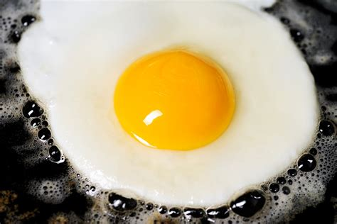

Fry eggs
This a simple recipe, anyone can do it!
Ingredients:
- 1 egg
- 1 tea spoon of butter
- 0.5 mg of salt
Instructions:
-
Take the tea spoon of oil and
put it on a pan.
-
Break the egg and put it on the pan.
-
Let the egg rest for 2 min on the pan.
-
Turn the egg around, while trying not
to break it.
-
Let the egg rest for another min on the pan.
